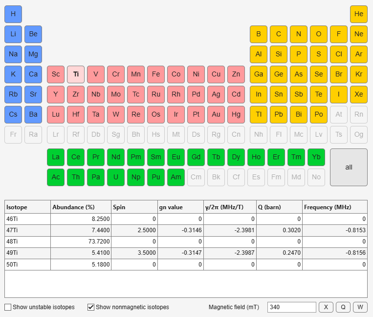

- EasySpin
- Documentation
- Publications
- Website
- Academy
- Forum
Interactive table of nuclear isotopes.
isotopes
This graphical interface provides an interactive periodic table of the elements with a list of nuclear isotope data, including natural abundance, spin, nuclear g factor, gyromagnetic ratio, electric quadrupole moment and NMR frequency.

Click on an element to list its isotopes, or on all to list the isotopes of all elements. The selected button is shown in a lighter color with bold text. Elements without isotope data in EasySpin's database are grayed out. The columns of the table can be sorted by clicking on the column headers.
By default, only stable isotopes are listed. To include radioactive isotopes (marked with an asterisk, e.g. 3H*), check Show unstable isotopes. To hide isotopes with spin zero, uncheck Show nonmagnetic isotopes.
The NMR frequency column gives the nuclear Larmor frequency at the magnetic field entered in the Magnetic field (mT) box. The buttons X, Q and W set the field to 340 mT, 1200 mT and 3400 mT, typical for EPR at X, Q and W band, respectively. The frequency is negative for nuclei with a negative g factor.
EasySpin's nuclear isotope database includes all stable isotopes plus the most important radioactive ones.
isotopes requires MATLAB R2021b or later.
eprconvert, gamman, larmorfrq, nucabund, nucdata, nucgval, nucqmom, nucspin